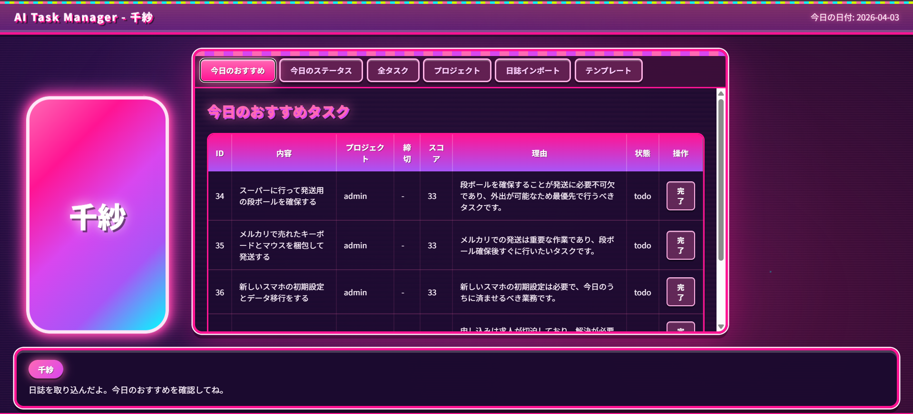
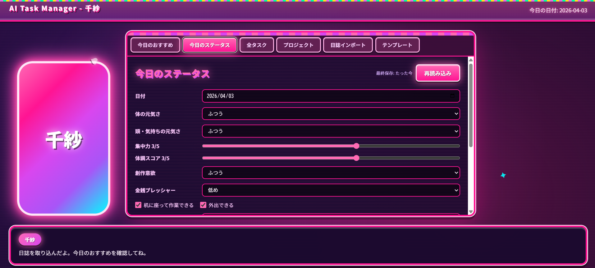
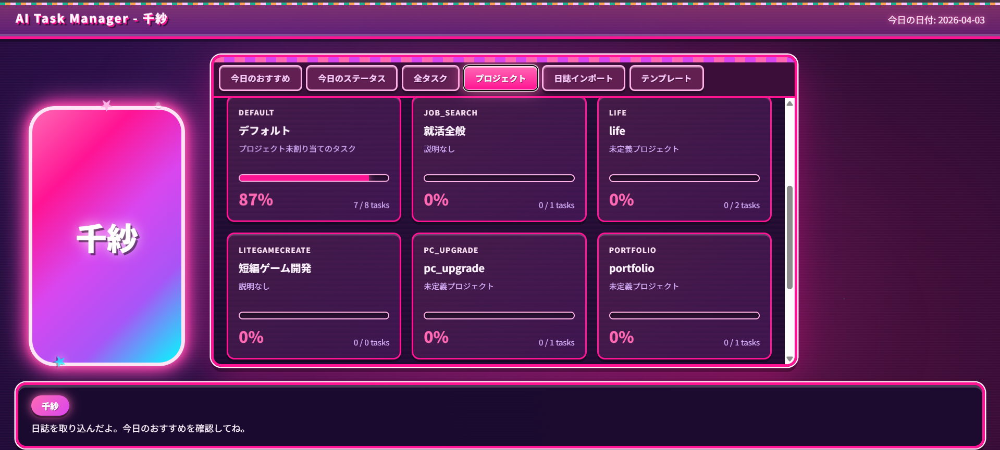
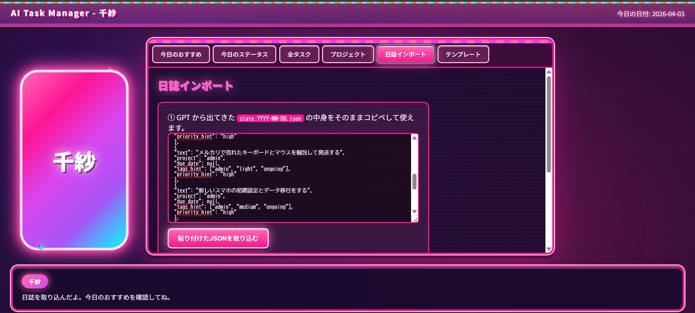

AI TASK MANAGER
AIが体調に合わせて登録したタスクを提案してくれるタスク管理ソフトです。
当時、無理にタスクを抱え込み過ぎた結果、ひどい体調の崩し方をしてしまったことがあったので、その改善方法として考え、制作しました。
AIと会話する中で、体調やタスクを把握させ、一日の最後にテンプレートに沿った日誌.jsonを出力させます。
そのデータを読み込み、ＡＰＩに問い合わせて登録したタスクから適切な優先順位を提案させます。
こだわった点としては、タスクにタグ情報を付ける事で、タスクの重さや、優先度、どのプロジェクトに属したものかを把握したうえで提案をさせることができる事です。
また、今回は実用を急いだことや、触れたことのない言語だったことなどから、コーディングにＡＩを使用しました。
その中でもPythonの基礎的な書き方を事前に学習したり、分からない書き方はAIに質問するなどして、理解を深めました。
特に、AIに頼ったとしても、使用する上での想定外、例えば入力される大文字小文字のずれ、出力された日誌がテンプレートに従っていないなどの
例外については自分で気が付くしかなく、技術が求められました。
Screenshot



